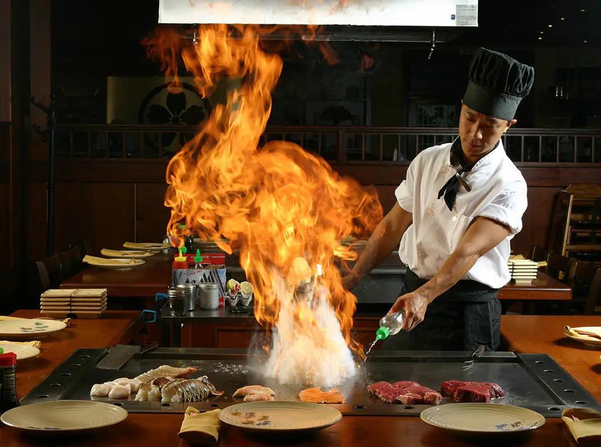
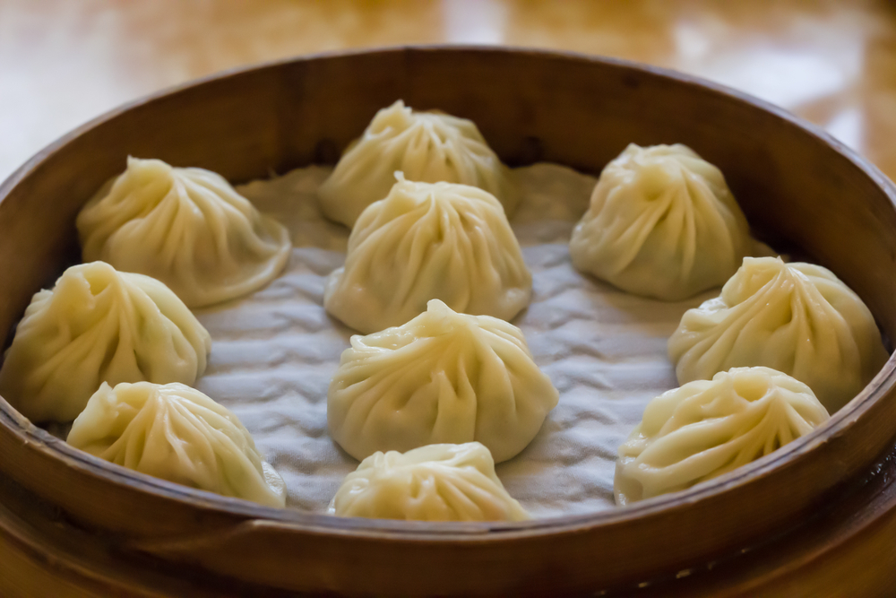
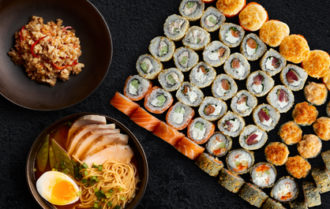

национальная кухня
Японская кухня известна своим упором на сезонность питания, качество ингредиентов и подачу блюд. Основой японской кухни является рис. Слово гохан (яп. 御飯 дословно «варёный рис») также может переводиться как «еда», причём уважительная приставка «го» к слову «хан» (рис) со временем стала обязательной, что говорит об огромной важности этого блюда для японцев. Помимо своего основного предназначения в качестве продукта питания рис также служил своеобразной денежной единицей, в старину рисом выплачивались налоги и жалование. Японцы используют рис для приготовления самых разнообразных блюд, соусов и даже напитков (сакэ, сётю, бакусю). На трапезе рис присутствует всегда. До конца XIX века рис ели только богатые, он был дорог. Остальные же берегли его к празднику, заменяя в простые дни ячменём. Только в XX веке рис стал общедоступен.
Вторым по значимости продуктом питания японцев является рыба: япония занимает четвёртое место в мире по употреблению рыбы и морепродуктов на душу населения Часто рыба употребляется в сыром или полусыром виде, например, в суши.
Популярны блюда с лапшой, приготовленной из пшеницы (удон) либо из гречки (соба). Лапша идёт и в супы, и как самостоятельное блюдо, с добавками и приправами.
Важное место в японской кухне занимает соя. Из неё готовят супы, соусы, соевый сыр (творог) тофу, натто.
Для сохранения пищи в условиях высокой влажности её часто засаливают, сбраживают или маринуют, примерами таких блюд могут служить натто, умэбоси, цукэмоно и соевый соус.
В современной японской кухне можно легко найти заимствования из китайской, корейской и тайской кухни. Некоторые заимствованные блюда, например рамэн (китайская пшеничная лапша), становятся очень популярными.
Столовый этикет в Японии отличается от европейского. Едят обычно из фарфоровых чашек палочками хаси. Жидкую пищу пьют из пиал, но иногда пользуются ложками. Ножом и вилкой пользуются исключительно для европейских блюд. Хлюпать за едой считается вполне приличным, но втыкать палочки в еду, особенно в рис, — недопустимо. Нельзя также класть палочки острыми концами влево, или поперек чашки, указывать ими на что-либо или махать ими в воздухе, зажимать их в кулаке и др. Хорошим тоном считается подливать напитки в бокалы соседям, но не себе.
Одно из наиболее популярных за пределами страны японских блюд — суши. Существуют несколько разновидностей, например, самым популярным видом суши является нигиридзуси (握り寿司: суши, сделанное с помощью рук). Он состоит из продолговатого комочка риса, спрессованного ладонями, небольшого количества васаби и тонкого кусочка начинки (сырой рыбы, креветок или икры), которая покрывает рис (нэта). Нигири могут также быть связаны тонкой полоской нори (прессованные листы водорослей). Норимаки (海苔巻) — это суши цилиндрической формы состоящее из кусочка сырой рыбы, завернутого в рис, и завернутого в нори. Одним из любимых блюд является сашими (刺身) — кусочки сырой рыбы. Её употребляют с соевым соусом, в который добавляют васаби. Часто сашими подают вместе на нарезанной соломкой редькой дайкон и листьями сисо (лат. Perilla)
У японцев много различных супов, но самый традиционный — мисосиру (味噌汁). Это суп из пасты мисо (которая изготовляется из варёных, размятых и перебродивших соевых бобов с добавлением соли и солода). Такие супы в каждом регионе готовят по-своему. Помимо этого японцы широко употребляют овощи и травы (картофель, морковь, капусту, хрен, укроп, сельдерей, петрушку, помидоры, лук, яблоки, дайкон), рыбу, мясо акул, морскую капусту, мясо курицы, кальмаров, крабов и прочие морепродукты.
Традиционным и популярным напитком японцев является зелёный чай, а спиртным — рисовое вино саке и сётю. Особое место в традиционной японской кухне занимает японская чайная церемония.
В последнее время японская кухня довольно популярна за пределами Японии, также вследствие её низкой калорийности она считается полезной для здоровья.



